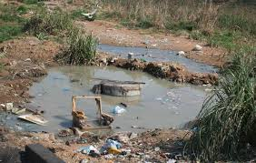
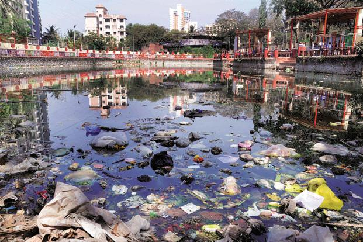
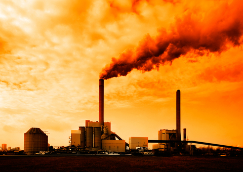
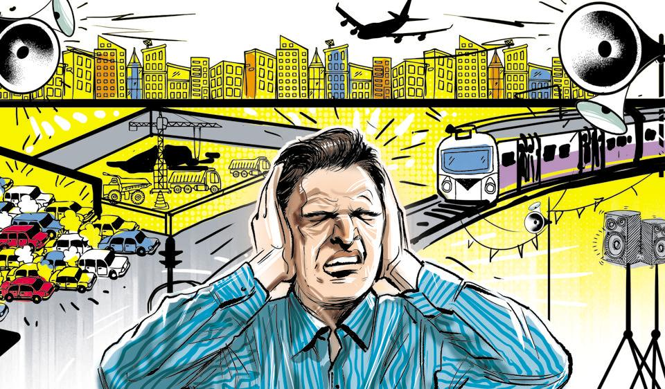

Land pollution:
Land pollution is the deterioration (destruction) of the earth’s land surfaces, often directly or indirectly as a result of man’s activities and their misuse of land resources.

Water pollution:
Water pollution is the contamination of water bodies (e.g. lakes, rivers, oceans, aquifers and groundwater). This form of environmental degradation occurs when pollutants are directly or indirectly discharged into water bodies without adequate treatment to remove harmful compounds.

Air pollution:
Air pollution occurs when harmful substances including particulates and biological molecules are introduced into Earth's atmosphere. It may cause diseases, allergies or death of humans; it may also cause harm to other living organisms such as animals and food crops, and may damage the natural or built environment.

Noise pollution:
Noise pollution is the disturbing noise with harmful impact on the activity of human or animal life. The source of outdoor noise worldwide is mainly caused by machines and transportation systems, motor vehicles engines and trains.